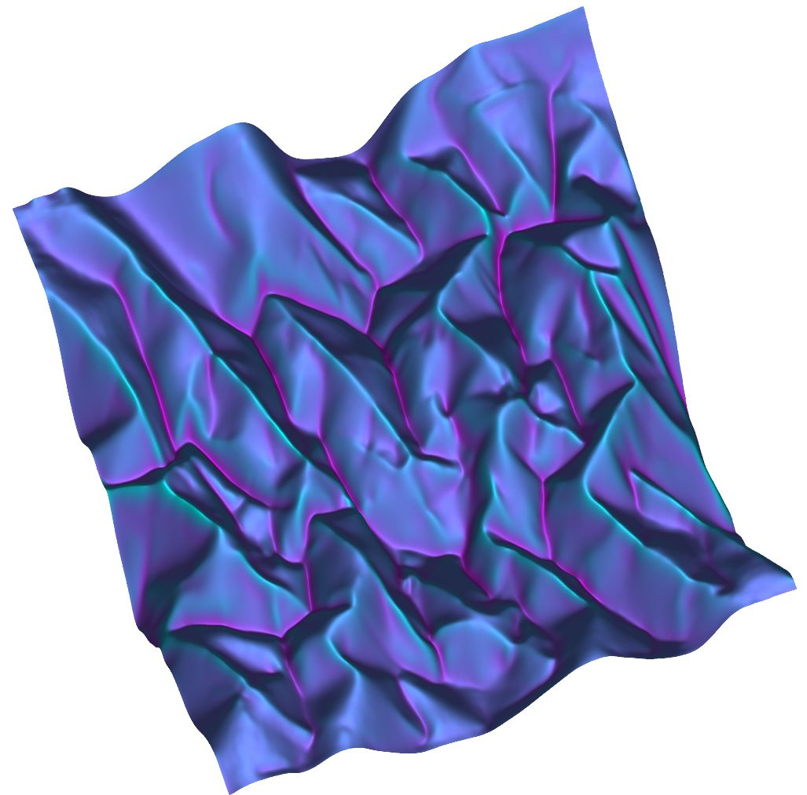

Publications
-
Memory in cyclically crumpled sheets — Amit Dawadi and Arshad Kudrolli. Phys. Rev. Research 6, no. 4 (Nov 2024): 043206.
-
Bundling architecture in elastic filaments with applied twist — Amit Dawadi, Animesh Biswas, Julien Chopin, and Arshad Kudrolli. Phys. Rev. E — Accepted June 18, 2025.

-
Self-Propulsion of floating ice blocks caused by melting in water — Michael Berhanu, Amit Dawadi, Martin Chaigne, Jérôme Jovet, and Arshad Kudrolli. Preprint: arXiv:2412.16010